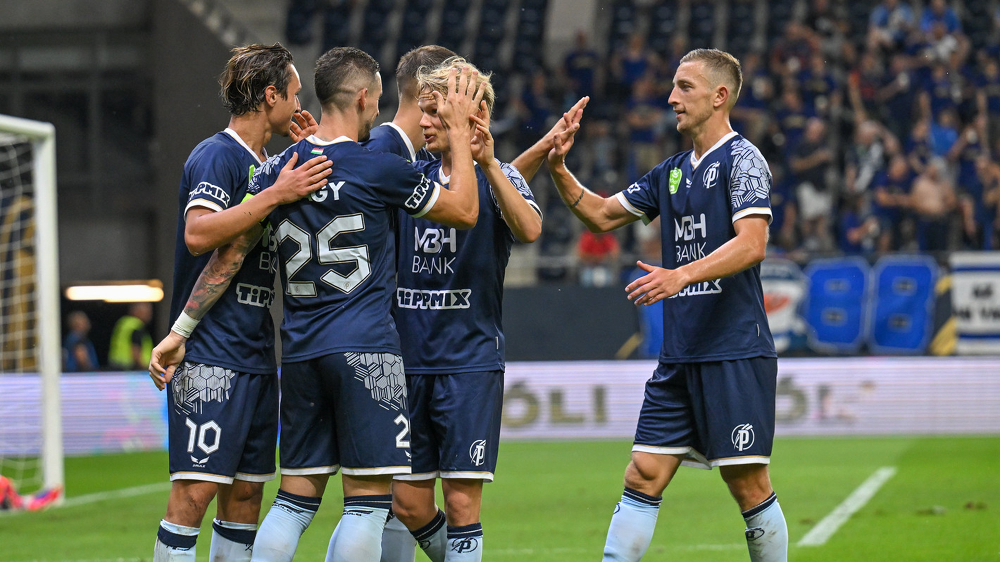

Több száz ingyenes európai vonatjegyre pályázhatnak a 18 éves magyarok
Forrás: Telex
Szigorítaná a kormány az egyetemi alapítványok összeférhetetlenségi szabályait
Forrás: Telex

Másodszor nyert a BVSC, ismét kikapott az Eger a női vízilabda BL selejtezőjében
Forrás: M4 Sport

Utolsó pillanatokban szerzett góllal tartotta otthon a pontokat a Puskás Akadémia a DVSC ellen
Forrás: M4 Sport